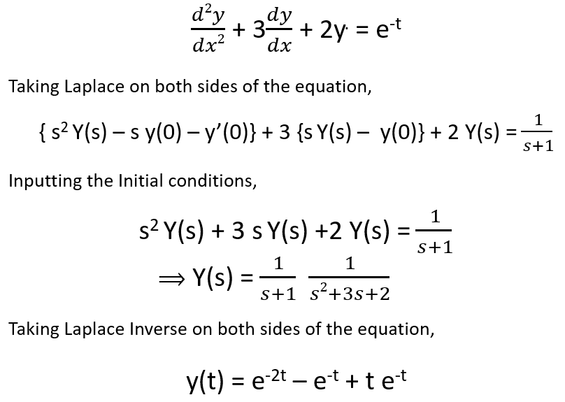
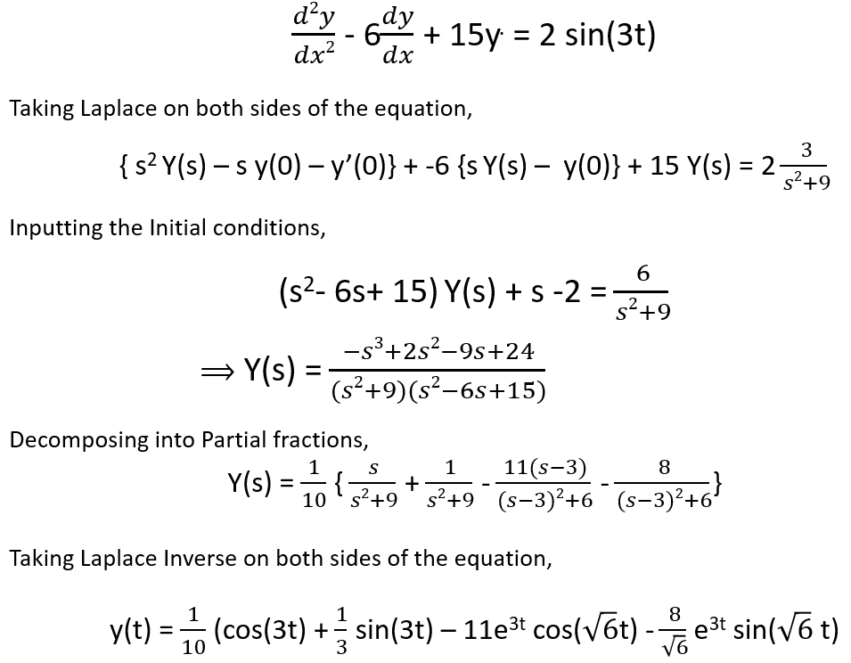

HOME BLOG EBOOKS ABOUT CONTACT SHOP
One of the biggest application of the Laplace transform is in solving Differential equations. Using the Laplace transform, a differential equation can be converted into an algebraic equation, which are way easier to solve. The following examples will make things clear.
1. with the initial conditions y(0) = y'(0) = 0

2. with the initial conditions y(0) = -1, y'(0) = -4
